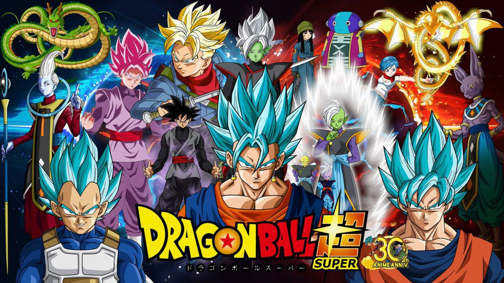
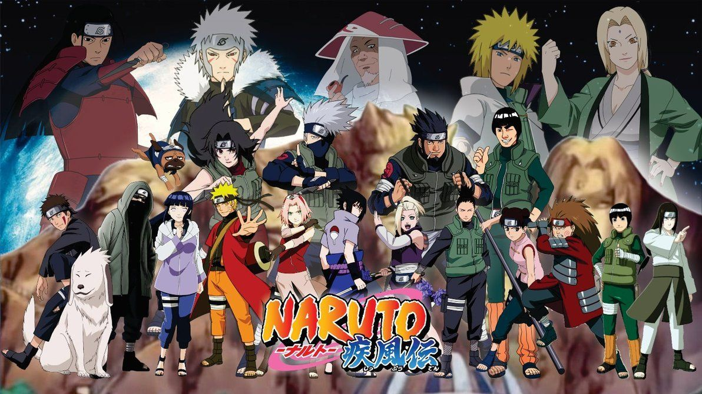
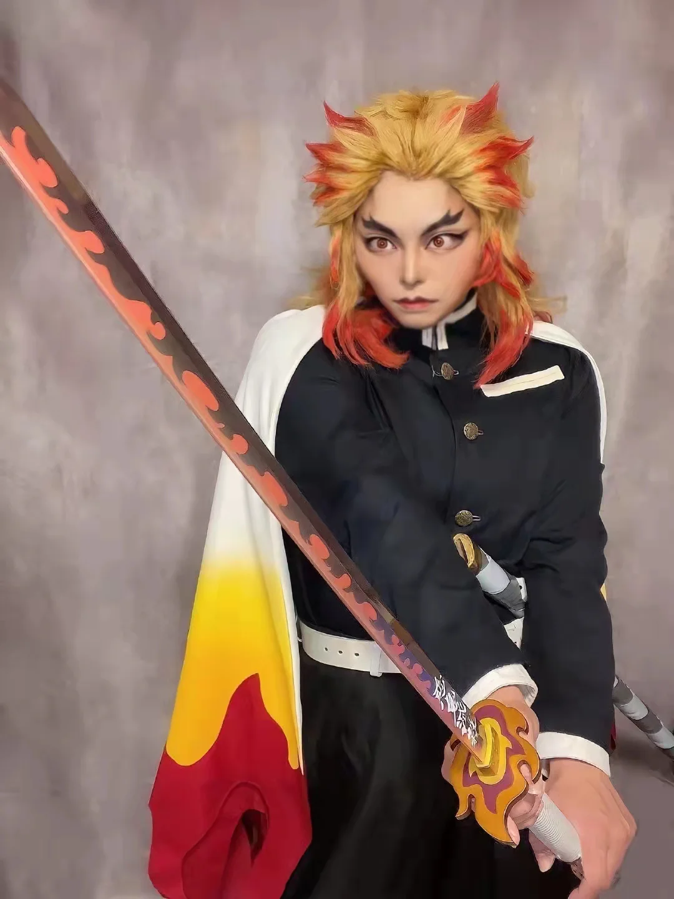

Light Yagami, um estudante que encontra um caderno capaz de matar qualquer pessoa cujo nome seja escrito nele. Light decide usá-lo para eliminar criminosos e criar um mundo ideal, desencadeando um jogo de gato e rato com o detetive L.
"Fullmetal Alchemist" é um anime que segue os irmãos Edward e Alphonse Elric em busca da Pedra Filosofal para restaurar seus corpos, perdidos após uma experiência alquímica mal-sucedida.
"Jojo's Bizarre Adventure" é um anime que segue várias gerações da família Joestar, cada uma enfrentando ameaças sobrenaturais com habilidades especiais chamadas "Stands". Uma experiência envolvente para fãs de aventuras sobrenaturais.
"Jujutsu Kaisen" segue Yuji Itadori, um estudante habilidoso arrastado para o mundo das maldições. Junto com outros usuários de jujutsu, ele luta contra maldições para proteger a humanidade. Com ação intensa e personagens cativantes, o anime oferece uma emocionante jornada sobrenatural.
A história segue Kaneda e seu amigo Tetsuo, que ganha poderes telecinéticos após um encontro sobrenatural. Confrontando segredos governamentais e conspirações, o filme explora temas de poder, corrupção e a natureza humana.
"Da Colina Kokuriko" é uma animação japonesa que acompanha Umi e Shun, estudantes do ensino médio nos anos 1960, enquanto se unem para preservar um clube estudantil.
Os guaxinins tanuki lutam para preservar sua floresta contra a urbanização humana. Usando suas habilidades mágicas de transformação, enfrentam uma batalha épica para salvar seu lar.
"Jujutsu Kaisen 0" explora as origens do universo de feitiçaria, seguindo Yuta em sua luta contra um culto sinistro e uma maldição assustadora. Com exorcistas ao seu lado, a história destaca a intensa batalha entre a humanidade e o sobrenatural, oferecendo ação e magia característicos de "Jujutsu Kaisen".
Os guaxinins tanuki lutam para preservar sua floresta contra a urbanização humana. Usando suas habilidades mágicas de transformação, enfrentam uma batalha épica para salvar seu lar.
"Jujutsu Kaisen 0" explora as origens do universo de feitiçaria, seguindo Yuta em sua luta contra um culto sinistro e uma maldição assustadora. Com exorcistas ao seu lado, a história destaca a intensa batalha entre a humanidade e o sobrenatural, oferecendo ação e magia característicos de "Jujutsu Kaisen".
A tão esperada segunda temporada da adaptação live action de One Piece está prestes a chegar, prometendo aos fãs uma experiência ainda mais emocionante. Com um elenco talentoso e efeitos especiais de alta qualidade, a série traz à vida o vasto mundo de Eiichiro Oda de maneira única.
O mangaká Eiichiro Oda anunciou pessoalmente a renovação de One Piece: A Série, adaptação live-action do anime pela Netflix. Em um vídeo fofo, o autor confirmou a nova temporada, anunciou a presença do companheiro Tony Tony Chopper e pediu paciência dos fãs.
Novos desafios, alianças inesperadas e reviravoltas aguardam os espectadores, garantindo uma jornada inesquecível. Prepare-se para embarcar em uma aventura repleta de ação, risos e momentos épicos com a segunda temporada de One Piece Live Action!
O Studio Ghibli mais uma vez encanta o público com sua mais recente obra-prima, "O Menino e a Garça". A narrativa segue a jornada de Kaito, um jovem corajoso, e sua amizade mágica com uma garça celestial. O filme destaca-se pela maestria técnica e sensibilidade, combinando animação tradicional com uma trilha sonora emocionante de Joe Hisaishi. Explorando temas como conexão com a natureza, amizade e autodescoberta, "O Menino e a Garça" transcende fronteiras culturais, oferecendo uma mensagem universal. Esta nova adição ao catálogo do Studio Ghibli promete capturar corações, tanto de fãs fiéis quanto daqueles que estão prestes a descobrir a magia singular deste renomado estúdio de animação japonês. Prepare-se para se perder em um mundo de maravilhas e emoções duradouras.
A atenção aos detalhes por parte dos cosplayers foi verdadeiramente notável. Desde as chamas dançantes da respiração do fogo até a intricada aderência do uniforme de Hashira, cada elemento foi reproduzido com precisão impressionante. A paleta de cores vibrantes, típica do personagem, iluminou o local, proporcionando aos fãs uma experiência visual autêntica.
O evento Jump Festa 24 revelou que o mangá Kaiju No. 8 de Naoya Matsumoto está tendo um spin-off. O mangá Kaiju No. 8 lado B estreará na Shonen Jump em 5 de janeiro. O mangá contará a história de vários membros das Forças de Defesa na linha de frente. Kentarou Hidano está desenhando o mangá e Naoya Matsumoto e Keiji Andou são creditados com o trabalho original.
Com uma narrativa cada vez mais intensa e aprofundada, a nova temporada promete desafios ainda maiores para Deku e sua turma na U.A. High School. Novos vilões surgirão, novas alianças serão forjadas, e os limites dos poderes dos heróis serão testados como nunca antes.
Foi divulgado um novo trailer para a próxima fase da adaptação em anime de Great Pretender, intitulada Great Pretender Razbliuto, no site oficial da série. O vídeo revela insights sobre a trama, destacando alguns dos personagens principais que ganharão destaque nesta continuação. A estreia da obra está programada para o dia 24 de fevereiro e os fãs poderão acompanhar a série através da plataforma Crunchyroll.
Em 2024, os fãs de Bleach podem se preparar para mais uma emocionante adição à saga com o lançamento de Bleach: Thousand Year Blood War Part 3. Esta nova temporada promete trazer revelações impactantes, batalhas intensas e um desdobramento épico da história. Com animação de alta qualidade, personagens inesquecíveis e reviravoltas emocionantes, esta parte da série continua a oferecer uma experiência envolvente para os entusiastas de anime. Esteja pronto para mergulhar nas novas reviravoltas e desafios junto com Ichigo e seus companheiros. Marque sua agenda e aguarde ansiosamente pelo lançamento em 2024!
Durante a celebração do Jump Festa'24, foi revelado que o manga "Chainsaw Man" de Tatsuki Fujimoto será adaptado para um novo filme de animação chamado "Chainsaw Man – Reze Arc".ainda não há uma data de lançamento para essa produção, A dubladora Reina Ueda emprestará sua voz ao personagem Reze. A adaptação busca manter a fidelidade à obra original, oferecendo uma jornada intrigante através do mundo de Chainsaw Man.
O evento Jump Festa ’24 revelou que a adaptação para anime de 3-Nen Z-Gumi Ginpachi-Sensei (Professor Ginpachi da Classe 3-Z), a série spin-off de Tomohito Ousaki do mangá Gintama de Hideaki Sorachi, irá ao ar na TV Tokyo em 2025. o spin-off oferece uma oportunidade emocionante para fãs antigos e novos explorarem um mundo divertido e imprevisível.
À medida que nos aproximamos do encerramento de 2023, os olhos se voltam para os momentos mais marcantes do ano, e os fãs de anime têm muitas expectativas. Recentemente, a prestigiada JW Magazine no Japão compartilhou sua tão aguardada lista dos principais animes que se destacaram ao longo de 2023. Neste contexto, vamos destacar os 10 animes mais destacados do ano, de acordo com as escolhas da revista, para todos os entusiastas da animação japonesa ao redor do globo.